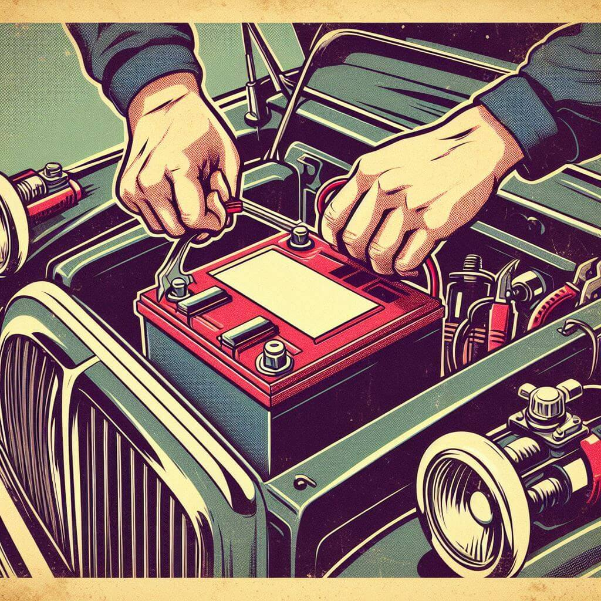
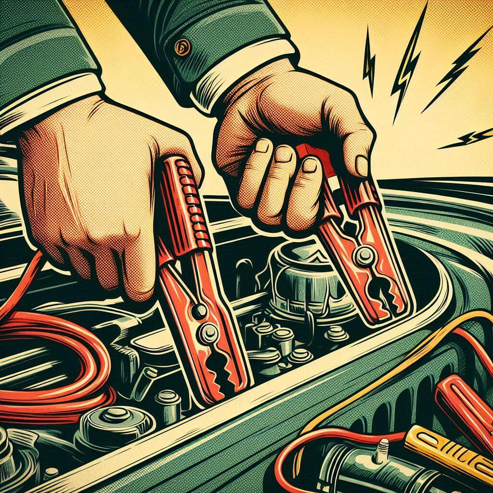
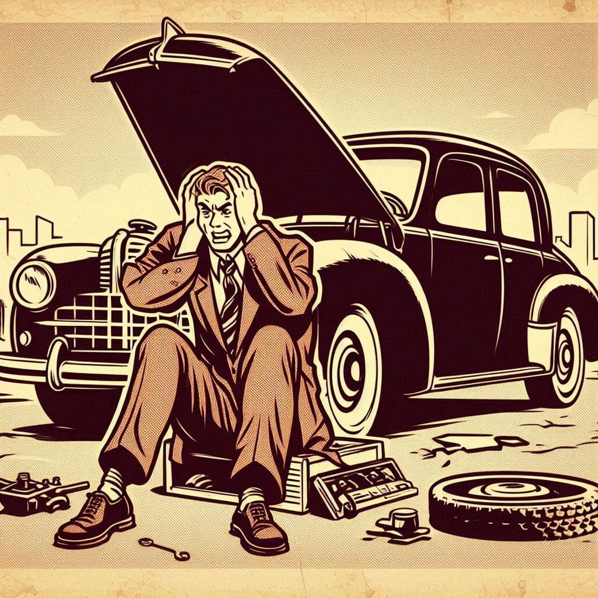

Latest from Our Blog
How to Maintain Your Car Battery
Learn the essential tips and tricks to keep your car battery in top condition and avoid unexpected breakdowns.

5 Signs Your Car Needs A New Battery
Find out the signs that indicate it's time to replace your car battery and how to choose the right one.

Jump-Starting Your Car: A Step-by-Step Guide
Follow our comprehensive guide to safely jump-start your car and get back on the road quickly.

Common Car Battery Problems and Solutions in Toronto
Discover the most common car battery issues and how to troubleshoot and fix them effectively.
Choosing the Right Car Battery for Your Vehicle in Scarborough
Choosing the correct battery isn't just about specifications—it's about understanding your driving environment.
DIY Tips for Extending Your Car Battery Life in North York
With a few proactive measures, North York drivers can keep their car batteries running longer.
The Impact of Cold Weather on Car Batteries and How to Prepare in Ajax
Proper preparation can help Ajax drivers mitigate the effects of cold weather on their car batteries.
The Benefits of Professional Battery Maintenance in Markham
Investing in professional maintenance offers reliability and efficiency that self-checks might miss.